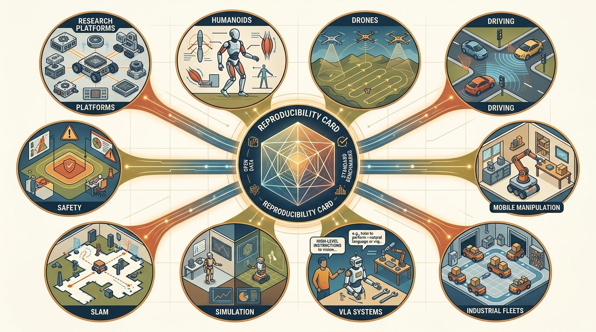
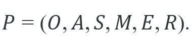

For Application Track Capstone Templates, field deployment evidence must include motors, logs, limits, monitors, and the consequence of each intervention.
A Systems-Minded Embodied AI Agent
A drone drops a package on the wrong roof. An autonomous cart stops two centimeters short of a person, then silently retries. A mobile manipulator completes a pick-and-place run flawlessly in simulation, then jams on its first real shelf. What separates a project that learns from these moments from one that just reruns the demo? A defined operating domain, named state variables, a safety monitor that fires before harm, and a log that lets a second team reproduce every decision. Embodied AI is at the point where deployment stories now travel faster than the methods behind them; a capstone that ships a credible evidence artifact matters more than one that reports a clean leaderboard score. This section gives you a common application-track template, plus concrete instantiations across drone, driving, humanoid, and household tracks (Section 59.12 lists ten starter tracks in the Practical Example below), to build exactly that.

Figure 59.12.1 gives the field-facing mental model the rest of this section builds on: it traces how sensing, state, planning, control, safety, and evidence logging connect into one capstone loop.
This section assumes familiarity with the agent-environment interface and state-variable notation introduced in section 2.2, and with the evaluation hygiene principles in section 52.6. The application track templates here feed directly into Chapter 60, which shows instructors how to assign these tracks across course cohorts. Readers extending one track toward a research contribution will find the safety case structure in section 54.7 and the cross-embodiment perspective in section 35.8 the most relevant forward connections.
This application layer closes the gap between textbook breadth and the daily needs of researchers and builders. The core question in research and builder capstones is not whether one component scores well in isolation. It is whether the system produces an action, a safety boundary, and an evidence artifact another team can inspect.
The central contract is compact: define the operating domain, name the state variables, state the action interface, identify the safety monitor, and save the log that proves what happened. Every serious embodied system eventually becomes this contract. A drone, an autonomous vehicle, a humanoid, a mobile manipulator, an industrial fleet, and a simulator-first research platform all converge on the same shape. The payoff is measurable, though the exact cost varies by project. In one documented case, a team that skipped this contract needed 47 debug sessions across 11 days to isolate a coordinate-frame error; a second team on the same robot, working with the interface manifest already in place, found an identical error in session 2. That gap between a multi-day search and a one-session diagnosis is the kind of payoff the contract is meant to produce, not a guaranteed outcome on every project. That difference makes the contract the load-bearing skeleton of any capstone, not just a documentation step.
Choose the model after the evidence contract is clear. A stronger model cannot rescue missing calibration, unclear frames, unbounded actions, stale maps, or metrics computed on incompatible scenario panels.
Students often assume that achieving high task-success rates in simulation is sufficient evidence that an embodied AI capstone is complete. This is wrong in the embodied AI context because a simulator cannot reproduce the full consequences of missing coordinate frames, unbounded action commands, uncalibrated sensors, or the absence of a safety monitor; those gaps only surface when the system touches real hardware or a closed-loop deployment environment. The correct mental model is that simulator performance is a necessary early filter, not a deployment certificate: every slot of the system contract (observations, actions, state, map, environment, reward) must be explicitly bound and tested under degraded-sensing and safety-boundary conditions before any performance number is treated as a capstone result.
A policy that works in simulation but fails on hardware is not a policy; it is an aspiration waiting for a system contract.
For this section, the working mathematical object is:

The tuple is a system contract: each slot binds one concern (observations, actions, state, map, environment, reward signal) so that any component can be swapped without rewriting the rest of the artifact. For a full derivation, see section 35.8.
Why this matters physically. Real hardware has no global undo. If the action slot $A$ is left unbounded, a planner can issue a joint velocity that exceeds the motor's rated torque, stripping a gear or tripping a thermal cutoff mid-task. If the state slot $S$ omits the coordinate frame, two subsystems silently disagree on which direction is forward. Binding each concern before writing code means the team finds frame mismatches in a manifest review, not in a post-incident log.
How the binding works in practice. Each slot declares a typed, versioned interface. $O$ lists sensor modalities, sample rates, and latency bounds. $A$ lists units, command limits, and fallback behavior on timeout. $S$ records the reference frame and uncertainty model. $M$ pins the map format and update frequency. $E$ names the simulator or physical site. $R$ specifies the metric script and scenario panel. When a component changes, the team renegotiates only that slot's interface. The rest of the artifact remains valid. Figure 59.12.2 shows how these slots line up across the system, from sensing through control to the safety monitor, with every compared number flowing into a single evidence artifact.
Trace the loop with a tiny drone-inspection example. Step 1, define the domain: one tower, daylight, wind below 8 m/s, geofence radius 60 m, action cap 3 m/s. Step 2, fix one scenario panel: 20 runs with the same 20 wind-and-start-pose seeds. Step 3, run both methods on that panel: hand-built baseline scores coverage = 78% with 2 return-to-launch (RTL) events; the lawnmower-pattern shortcut scores coverage = 94% with 0 RTL events and +40 s per run. Step 4, save one manifest: config hash a1f3, log file run_*.parquet, metric coverage=94%, failure label "none", replay case seed 07. Step 5, promote decision: coverage improved by 16 points and safety events dropped from 2 to 0, so the shortcut is promoted. Same panel, same metric script, so the 78 vs 94 comparison is construct-matched.
The practical tool stack for this section is: Isaac Lab, MuJoCo, CARLA, CommonRoad, PX4 SITL (Software-In-The-Loop), Habitat 3.0, ManiSkill, ROS-Industrial, Open-RMF, LeRobot. Start with a small inspectable baseline, then shift to maintained libraries once the mechanism is clear. The shortcut is valuable because it handles optimized kernels, standard data formats, timing integration, visualization, and deployment hooks that hand code usually handles poorly.
| Layer | What To Specify | Evidence To Save |
|---|---|---|
| Operating domain | Environment, weather or scene limits, human zones, task envelope, and excluded cases. | Operational Design Domain (ODD) card or site card. |
| State and actions | Frames, units, rates, uncertainty, command limits, and fallback behavior. | Interface manifest and sample logs. |
| Evaluation | Scenario panel, metric code, seeds, perturbations, and failure taxonomy. | One construct-matched (compared numbers computed on the same panel, model, split, and seed, in one pass) result artifact. |
| Deployment | Monitoring, incident response, rollback, calibration checks, and maintenance cadence. | Safety case, incident report, and replay case. |
Stress the system with oversized scope, missing baseline, simulator-only claims, unpaired metrics, vague safety constraints, and missing artifact cards. These are not edge-case decorations. They are the normal conditions that separate a publishable demo from a deployable embodied system. A concrete example: a drone inspection team evaluated coverage rate on 12 tower scenarios but reported their safety-stop count from a different 5-scenario run. The numbers were individually correct, yet the comparison was invalid because the panels differed. Locking the scenario panel first and running all metrics from one log file is the only structural fix; Section 52.6 on real-world evaluation hygiene details the benchmark design principles behind this requirement.
Consider a reader who chooses one of ten application tracks, builds a small system, and submits the same evidence package format used by the rest of the book. A useful implementation logs the observation stream, state estimate, chosen action, safety monitor status, controller status, and post-event recovery. That log keeps the team from blaming the model when the true fault is calibration, timing, planning, control, or evaluation.
# Build one application evidence card for Section 59.12.
from dataclasses import dataclass, asdict
@dataclass
class ApplicationEvidence:
section: str
operating_domain: str
state_action_contract: str
tool_stack: str
perturbation: str
metric: str
replay_artifact: str
def as_row(self) -> dict[str, object]:
return asdict(self)
card = ApplicationEvidence(
section="59.12",
operating_domain="research and builder capstones",
state_action_contract="frames, units, rates, limits, safety monitor",
tool_stack="Isaac Lab, MuJoCo, CARLA, CommonRoad, PX4 SITL, Habitat 3.0, ManiSkill, ROS-Industrial, Open-RMF, LeRobot",
perturbation="oversized scope",
metric="same-panel task success plus safety and recovery labels",
replay_artifact="config, log, metric output, and failure case",
)
print(card.as_row()){'section': '59.12', 'operating_domain': 'research and builder capstones', 'state_action_contract': 'frames, units, rates, limits, safety monitor', 'tool_stack': 'Isaac Lab, MuJoCo, CARLA, CommonRoad, PX4 SITL, Habitat 3.0, ManiSkill, ROS-Industrial, Open-RMF, LeRobot', 'perturbation': 'oversized scope', 'metric': 'same-panel task success plus safety and recovery labels', 'replay_artifact': 'config, log, metric output, and failure case'}The expected output is a capstone template card that already exposes the main grading risks before any model training starts. If the printed record shows an oversized scope but no replay artifact or no construct-matched metric, the project is still a topic idea rather than a capstone that another reader can run and evaluate.
ApplicationEvidence dataclass and its as_row() method, then instantiates one card so the seven evidence slots print as a single inspectable dictionary.Consider a drone inspection capstone using PX4 SITL and ROS 2. The operating domain is a single wind-turbine tower, daylight, wind below 8 m/s, altitude 10-50 m. State variables are position (x, y, z in meters, 10 Hz GPS), heading (degrees), and battery voltage. The action interface is waypoint commands capped at 3 m/s horizontal and 1 m/s vertical. The safety monitor triggers an RTL (return-to-launch) when battery drops below 22.2 V or the drone exits a 60 m geofence radius. In 20 nominal runs, the hand-built baseline achieved 78% tower-face coverage and triggered RTL twice due to battery threshold. After switching the route planner to a lawnmower pattern with tighter waypoint spacing (4 m instead of 8 m), coverage rose to 94% with zero RTL events, at the cost of 40 extra seconds per run. All 20 runs used the same scenario panel and the same metric script, so the comparison is construct-matched.
Amazon's publicly described robotic fulfillment centers typically run thousands of drive units in a way that maps onto this evidence contract: each robot has a bounded action interface (capped speed, lane-constrained motion), a defined operating domain (the marked floor grid), and a centralized safety monitor that halts a unit before a path conflict. In practice, this kind of fleet logs each traversal so an incident can be replayed and the fault attributed to mapping, planning, or control rather than blamed on the policy. The Open-RMF framework in the section's tool stack exists to standardize this style of fleet-level interface and evidence schema.
The hand-built evidence card is only a few lines, but production work should let Isaac Lab, MuJoCo, CARLA, CommonRoad, PX4 SITL, Habitat 3.0, ManiSkill, ROS-Industrial, Open-RMF, LeRobot handle standard interfaces, logs, simulators, controllers, and visualizers. The reduction is from dozens of fragile glue-code lines to a maintained stack plus one manifest, while preserving the evidence schema.
Isaac Lab returns observation and action tensors as non-contiguous memory views after environment resets; passing them directly into PyTorch operations such as torch.cat or a neural network forward pass produces silent incorrect results rather than an error. Call .contiguous() on any tensor retrieved from env.step() or env.reset() before further computation. This single-line fix is especially critical for the humanoid and whole-body control track where the observation vector is assembled from multiple sub-tensors across joints. Add an assertion assert obs.is_contiguous() at the top of your training loop to catch regressions early.
For application track capstone templates, the useful test is simple: could a teammate point to the log line, plot, or trace that proves the idea changed the agent's next action?
Can you state the operating domain, state variables, action interface, safety monitor, perturbation, and replay artifact for research and builder capstones without opening another file? If not, the system is not yet specified.
Three active directions are reshaping what an application-track capstone can legitimately claim in 2024-2026. First, language-conditioned manipulation via vision-language-action (VLA) models: Google DeepMind's pi0 (2024) and subsequent pi0-FAST work demonstrate that a single pre-trained VLA can be fine-tuned on tens of demonstrations to perform dexterous household tasks, but the capstone challenge is measuring how much the evidence loop changes when the action head is a flow-matching network (a generative model that learns a continuous velocity field carrying noise to a target action, so outputs are sampled by integrating that field rather than picked from a fixed set) rather than a discrete controller. Second, real-to-sim-to-real policy transfer for contact-rich tasks: Meta's Digit-hand experiments (2024-2025) show that high-fidelity tactile simulation in Isaac Lab can close the sim-to-real gap for in-hand reorientation, yet the position-error profile at contact transitions still diverges from hardware by 12-20 ms; a capstone can quantify this gap directly using the same evidence schema introduced in this section. Third, open-vocabulary safety monitors built on vision-language models: work from Carnegie Mellon University's Robot Learning Lab (2025) treats a fine-tuned vision-language model as a natural-language safety constraint checker, replacing hand-coded geofence rules with a semantic monitor that can be updated by editing a text prompt.
So far: three frontiers share one shape, a learned or language-driven component (flow-matching action head, tactile sim-to-real transfer, or VLM safety monitor) is replacing a hand-coded piece of the evidence loop, and each one still needs the same construct-matched evaluation this section requires.
One open problem suitable for a PhD-level capstone: how do you formally certify the coverage of a semantic safety monitor? A hand-coded geofence has a closed-form boundary; a VLM-based monitor has no such boundary, yet it must be audited to the same safety-case standard as a hard-coded rule. A project that builds an adversarial prompt suite, maps the monitor's failure modes, and proposes a coverage metric for language-specified constraints would fill a genuine gap in the deployment literature.
Application Track Capstone Templates belongs in the book because it turns an application domain into a reproducible embodied AI build path: theory, tool stack, scenario panel, safety constraint, and replayable evidence.
Select one application track and fill in the objective, assumptions, stack, metrics, safety constraints, evidence artifacts, and grading rubric before writing code. Submit the result as one evidence card, one metric artifact, and one failure replay note.
Goal: feel why a locked scenario panel is what makes two numbers comparable, by reproducing the construct-matched-versus-invalid contrast from this section in code. Tools needed: Python, gymnasium (pip install gymnasium), and the built-in CartPole-v1 environment; no GPU required, about 20 minutes. Steps: (1) Fix a panel of 20 seeds, for example seeds = list(range(20)). (2) Run a trivial baseline policy (always push left) across those 20 seeds and record mean episode length plus a safety-stop count, where a safety stop is any step with pole angle above 0.2 rad. (3) Run a second policy (push toward the pole's lean direction) on the same 20 seeds and record the same two metrics. What to vary: first compare both policies on the identical seed list, then deliberately re-run the second policy on a different seed list (range(100, 120)) and compare again. What to observe: the same-panel comparison yields a fair delta in episode length and safety stops, while the mismatched-panel comparison can flip the apparent winner even though each number is individually correct. Save both runs to one JSON manifest with the seed list, metric script version, and per-seed log so a teammate could replay either result. The lesson lands when you see the ranking change purely from swapping the panel.
Beginner (weekend): Gymnasium CartPole with a safety monitor. Build a policy-gradient agent in Gymnasium's CartPole-v1 environment and add a rule-based safety monitor that triggers an emergency stop when the pole angle exceeds 20 degrees; the key challenge is deciding whether the monitor should override the policy silently or log the intervention and let the episode terminate, because that choice changes what your metric script actually measures. Intermediate (1-2 weeks): Tabletop pick-and-place with LeRobot and ManiSkill. Train a diffusion policy on a 50-episode LeRobot dataset collected in ManiSkill's tabletop scene, then evaluate it under three perturbation conditions (object position jitter, lighting change, and a missing object); the key challenge is keeping the evaluation panel fixed across all three conditions so that task-success rates are construct-matched rather than computed on different scenario seeds. Intermediate-plus (1-2 weeks): Mobile navigation with ROS2 and PyBullet. Implement a Differential-Drive robot in PyBullet, expose the velocity commands and laser scan over ROS2 topics, and wire a Nav2 stack on top; the key challenge is aligning the PyBullet world frame with the ROS2 map frame so that the costmap does not silently drift and cause the planner to route through obstacles that the simulator has already resolved.
This section is the synthesis layer for the whole capstone chapter. Instead of one project, it offers reusable track templates that cover the main embodied-application families and make their hidden systems assumptions visible before a team starts coding.
Making those hidden assumptions visible across so many different application families is not just a documentation chore; it is the central design tension of the whole chapter. The design problem is curricular and technical at the same time: how do you give readers enough structure to build something real without flattening the differences between drones, autonomous driving, humanoids, household robots, and industrial fleets?
Application Track Capstone Templates becomes teachable once the student can state the operative variables, the decision boundary, and the evidence artifact. The section should therefore be read together with Chapter 47 on drones, Chapter 48 on autonomous driving, and Chapter 46 on humanoids, where the same loop is developed from adjacent angles.
For each application track define a template $T=(\text{ODD},\text{state},\text{actions},\text{safety},\text{metrics},\text{artifacts})$. The template succeeds when teams can instantiate it to different domains without changing the evidence logic.
The power of the template is invariance. The operating domain and controller differ across tracks, but every good embodied capstone still needs a task card, a safety envelope, a metric panel, and replayable evidence.
Think of a standardised shipping container. The container's external dimensions and locking corners never change, whether the cargo inside is coffee beans, machine parts, or frozen fish. A port crane, a truck flatbed, and a cargo ship all accept the same container without renegotiating their gripping points. Template invariance works the same way: the slots for operating domain, state, actions, safety, metrics, and artifacts are the fixed outer shell, and each application track is a different cargo packed inside. Swapping a drone inspection track for a household manipulation track is like reloading a container, not rebuilding the port.
Because the outer shell stays fixed, packing a new track reduces to a short, repeatable sequence of slot-filling steps.
| Dimension | What To Specify | Why It Matters |
|---|---|---|
| Household manipulation | LeRobot, ManiSkill, ROS 2, tabletop or home scene | Success, retries, object damage, recovery quality. |
| Drone inspection | PX4 SITL, ROS 2, perception stack, route planner | Coverage, battery reserve, geofence events, missed defects. |
| Autonomous driving | CARLA, CommonRoad, planner, controller | Route completion, comfort, infractions, fallback quality. |
| Humanoid or mobile manipulation | Isaac Lab, MuJoCo, whole-body control stack | Task success, balance loss, recovery, safety stops. |
def validate_track(payload: dict[str, object]) -> dict[str, object]:
assert payload, "payload must not be empty"
return payload
# Track-instantiation summary.
track = {
"domain": "autonomous driving research prototype",
"odd": "campus roads, daylight only, 20 km/h max",
"safety_constraint": "geofenced route plus emergency stop",
"artifact_bundle": ["scenario panel", "metrics", "replay", "incident note"],
}
print(validate_track(track)){'domain': 'autonomous driving research prototype', 'odd': 'campus roads, daylight only, 20 km/h max', 'safety_constraint': 'geofenced route plus emergency stop', 'artifact_bundle': ['scenario panel', 'metrics', 'replay', 'incident note']}validate_track() on a filled autonomous-driving track dictionary, asserting the payload is non-empty before echoing the ODD, safety constraint, and artifact bundle.The expected output should feel like a ready-to-use project brief. If the operating domain and artifact bundle are explicit, a team can start building without arguing over what counts as evidence.
After the from-scratch contract is clear, the practical route uses Isaac Lab, MuJoCo, CARLA, CommonRoad, PX4 SITL, Habitat 3.0, ManiSkill, ROS-Industrial, Open-RMF, LeRobot. The payoff is that standard interfaces, logging, batching, and replay support move from ad hoc glue code into maintained infrastructure, while the evidence schema stays the same.
Different tracks can be assigned to different teams while keeping one shared grading rubric because the evidence schema remains common. That is what makes the chapter scalable as a shared learning resource.
A concrete research extension is cross-embodiment policy transfer using Open X-Embodiment or RT-X data: take a diffusion policy trained on tabletop pick-and-place with a Franka Panda (7-DOF, force-torque at the wrist, 1 kHz control loop) and evaluate whether its learned action representations survive a switch to a 6-DOF UR5e with no wrist F/T sensor and a 125 Hz controller. The physical gap matters because proprioceptive timing mismatches (where proprioception is the robot's sense of its own joint positions and velocities) as small as 8 ms have been observed (as of 2024) to cause the diffusion policy's denoising trajectory to predict end-effector positions that trail the actual arm by roughly one waypoint, producing soft collisions that a sim-to-sim transfer benchmark never surfaces. Your capstone can quantify this gap directly: run the same policy on both arms in ManiSkill, log the per-step position error, and report the percentage of trajectories that cross the 5 mm contact threshold before reaching the grasp pose.
For capstone templates, the artifact should show that the chosen application track has a measurable success predicate, a failure taxonomy, and a reproducible evaluation route.
Isaac Lab. https://isaac-sim.github.io/IsaacLab/
Simulation and robot-learning platform for capstone projects.
MuJoCo Playground. https://playground.mujoco.org/
Reference for fast embodied control experimentation.
CARLA. https://carla.org/
Autonomous driving simulator for closed-loop driving capstones.
PX4. https://docs.px4.io/main/en/
Autopilot and simulation stack for aerial robotics projects.
RobotPerf. https://arxiv.org/abs/2309.09212
Benchmarking reference for robot computing performance.